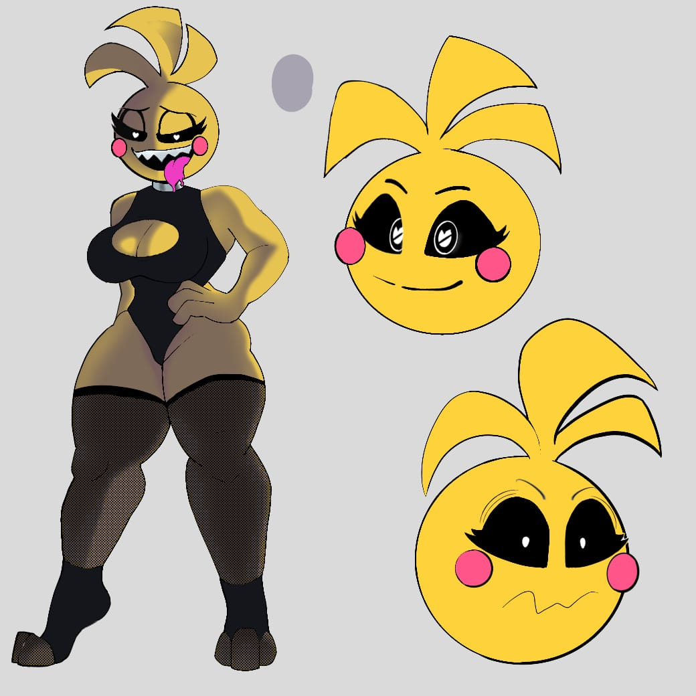

!DOCTYPE html>
Mis personaje - Arte de Rabe
Nombre del personaje: Toy Chicky

Cuando cree este dibujo me sentia muy
emocionado
y sorpredido es la primera vez
que e echo algo tan bueno y la verdad me gusto bastante son cosas como esta las que me
hacen querer seguir dibujadon y desarrollamdome como artista y como persona UwU